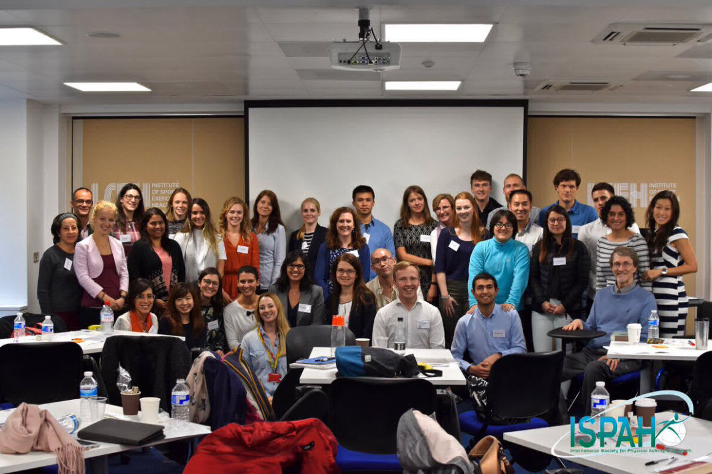
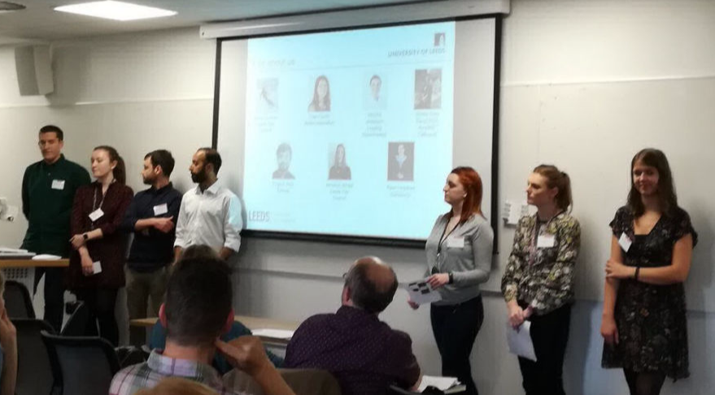

Address
Leeds Institute for Data Analytics
Level 11
Worsley Building
Clarendon Way
Leeds
Contacts
Email: fs14fp@leeds.ac.uk
Links
Twitter
Data Analytics and Society Profile
School of Geography Profile
ISPAH Early Career Network Event


Leeds Institute for Data Analytics
Level 11
Worsley Building
Clarendon Way
Leeds
Email: fs14fp@leeds.ac.uk
Twitter
Data Analytics and Society Profile
School of Geography Profile